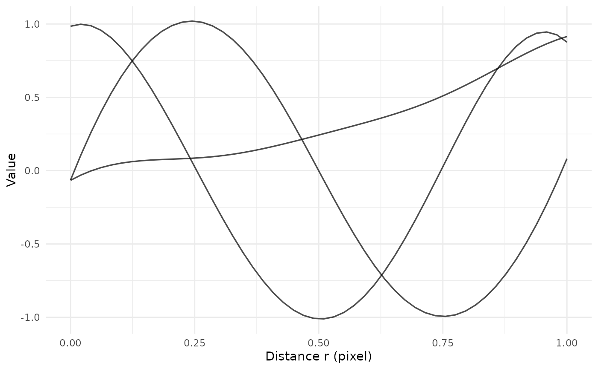

Smooth curves observed on a common grid into a functional data object
Source:R/funsmooth.R
funSmooth.RdFits a penalised B-spline smoother (fda::smooth.basis()) to curves observed on the same grid r, for example summary functions (K, L, g) estimated for several samples. The table must contain one column with the grid (r_value by default) and one numeric column per curve.
Usage
funSmooth(
df,
norder = 6,
Lfdobj = 4,
r_col = NULL,
centered = FALSE,
nbasis = NULL,
breaks = NULL,
lambda = NULL,
rangeval = NULL,
fun_type = c("none", "L", "K", "g"),
unit = "pixel",
to_micron = FALSE,
mpp = NULL,
magnif = NULL,
mpp_ref = 0.25,
mag_ref = 40,
verbose = TRUE,
...
)Arguments
- df
A
data.frameordata.tablewith the grid column and one numeric column per curve.- norder
Spline order (
norderin fda). Must be a positive integer.- Lfdobj
Order of the derivative used in the roughness penalty (
Lfdobjoffda::fdPar()): a non-negative integer smaller thannorder, or anLfdobject.- r_col
Name of the grid column.
NULL(default) means"r_value".- centered
If
TRUE,ris subtracted from every curve before smoothing (L(r) - r).- nbasis
Number of basis functions. If
NULL,min(30, max(norder + 1, floor(length(r) / 4))). If it is not smaller than the number of grid points it is reduced tomax(norder + 1, length(r) - 1). Ignored whenbreaksis given.- breaks
Optional knot vector (strictly increasing, from
rangeval[1]torangeval[2]); thennbasis = length(breaks) + norder - 2.- lambda
Smoothing penalty, a non-negative number. If
NULL, it is chosen by generalised cross-validation (GCV), with the same basis and penalty used for the fit.- rangeval
Range of the basis,
c(min, max). IfNULL,range(r). Must contain all the grid values.- fun_type
Summary function in the curves:
"none"(default),"L","K"or"g". Used for the labels and to rescale the values when converting units.- unit
Unit of the
rcolumn, a single string (default"pixel").- to_micron
If
TRUE, converts from pixels to microns (requiresunit = "pixel"and one ofmppormagnif).- mpp
Microns per pixel.
- magnif
Magnification of the coordinates (e.g. 20 or 40), alternative to
mpp.- mpp_ref, mag_ref
Microns per pixel at a reference magnification, used with
magnif. Default: 0.25 micron/pixel at 40x.- verbose
If
TRUE, prints messages on the choices made.- ...
Other arguments passed to
fda::smooth.basis()(e.g.wtvec).
Value
An object of class spafun_fd, a list with:
fd: the smoothed curves, anfdobject (one replicate per curve, named after the curve columns);fdPar: thefdParobject actually used for the fit;basis: the B-spline basis;mat: the matrix of curves (converted and centred, as smoothed);r: the grid (converted);centered: whetherrwas subtracted from the curves;fun_type: the summary function;unit: the unit ofrin the result;settings: list with the smoothing parameters actually used (norder,Lfdobjas derivative order,nbasis,breaks,rangeval,lambda,lambda_method"gcv"or"user",dfof the GCV fit,fallback) and the unit conversion (unit_in,to_micron,mpp).
See print.spafun_fd() for the methods.
Details
If smooth.basis() fails, a second attempt is made with a second derivative penalty (Lfdobj = 2) and lambda = max(lambda, 1e-4), with a warning; the settings actually used are stored in the result.
Units: unit is the unit of the r column (free text, e.g. "pixel" or "micron"). With to_micron = TRUE (only from "pixel") the grid is multiplied by the microns per pixel mpp, given directly or as mpp = mpp_ref * mag_ref / magnif. The curve values are rescaled according to fun_type: L has the unit of a length (* mpp), K of an area (* mpp^2), g and "none" are left unchanged. rangeval and breaks are in the unit of the r column and are converted with it.
Examples
# three noisy curves observed on the same grid
set.seed(1)
r <- seq(0, 1, length.out = 50)
curves <- data.frame(
r_value = r,
A = sin(2 * pi * r) + rnorm(50, sd = 0.1),
B = cos(2 * pi * r) + rnorm(50, sd = 0.1),
C = r^2 + rnorm(50, sd = 0.1)
)
res <- funSmooth(curves, verbose = FALSE)
#> Warning: lambda reduced to 259.568955954505 to prevent overflow
#> Warning: lambda reduced to 259.568955954505 to prevent overflow
#> Warning: lambda reduced to 259.568955954505 to prevent overflow
res
#> <spafun_fd> 3 curves
#> r: [0, 1] pixel, 50 points
#> function: Value
#> centered: no
#> basis: B-spline, order 6, 12 basis functions
#> penalty: derivative 4, lambda = 5.31e-08 (GCV, df = 6.35)
plot(res)
#> Ignoring unknown labels:
#> • colour : "Group"

# grid column with another name, fixed number of basis functions and a
# stronger penalty
names(curves)[1] <- "dist"
res2 <- funSmooth(curves, r_col = "dist", nbasis = 10, lambda = 1e-3,
verbose = FALSE)
# the result can be used directly in fda, e.g. for a functional PCA
pca <- fda::pca.fd(res2$fd, nharm = 2, harmfdPar = res2$fdPar)
pca$varprop
#> [1] 0.6767749 0.3232251
# L functions computed on coordinates in pixels at 40x, converted to
# microns (0.25 micron/pixel at 40x) and centred: L(r) - r
r_px <- seq(0, 200, length.out = 60)
L_px <- data.frame(r_value = r_px,
s1 = r_px + 5 * sin(r_px / 30),
s2 = r_px - 3 * sin(r_px / 40))
res_um <- funSmooth(L_px, fun_type = "L", centered = TRUE,
to_micron = TRUE, magnif = 40, verbose = FALSE)
#> Warning: GCV minimum on the border of the range: consider widening `dfRange`.
res_um$unit
#> [1] "micron"
range(res_um$r)
#> [1] 0 50
head(as.data.frame(res_um))
#> r sample value
#> 1 0.0000000 s1 -7.101904e-06
#> 2 0.8474576 s1 1.409508e-01
#> 3 1.6949153 s1 2.800923e-01
#> 4 2.5423729 s1 4.156588e-01
#> 5 3.3898305 s1 5.459278e-01
#> 6 4.2372881 s1 6.692379e-01